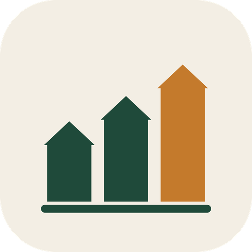
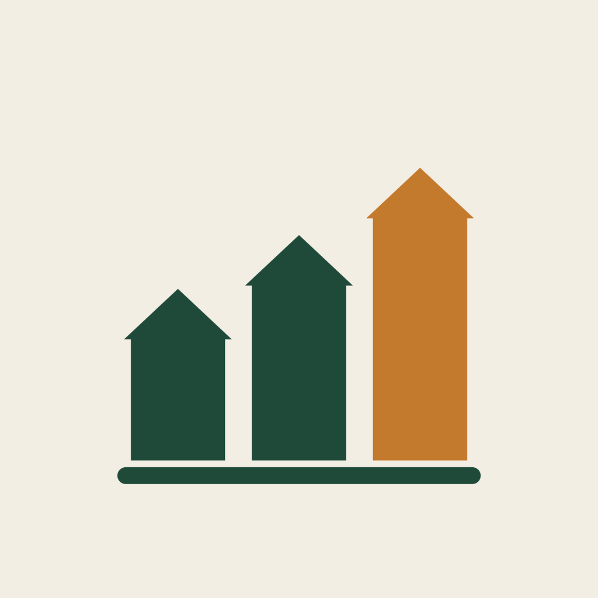

Tulhia, a marca
Caixa e dívidas da fazenda, com consultor. Versão 1, 05/10/2026.
A tulha guarda a safra. A Tulhia guarda o caixa.
O símbolo são três silos que sobem, lidos de uma vez como o gráfico de caixa dos próximos 12 meses: o produto é exatamente isso, ver o caixa mês a mês. O silo mais alto, em ocre, é o mês da safra, quando o dinheiro entra. Nome: tulha (o depósito da colheita) + IA.
Símbolo e assinaturas
Símbolo, versão principal sobre papel
Assinatura vertical
Assinatura horizontal (cabeçalho, WhatsApp, documentos)
Sobre verde: papel e ocre claro
Sobre terra (rodapé, telas escuras)
Cores
Tipografia
Nome e títulos. Entreletras -0,03em. O nome é sempre em Bricolage, com T maiúsculo e o resto minúsculo.
Texto corrido, números, botões, telas do app. Nunca abaixo de 16 px no celular.
Ícones e avatar


Regras de uso
- O ocre vai só no silo mais alto. Nunca pintar os três de ocre nem o nome.
- Sobre fundo escuro, os silos ficam em papel e o acento em ocre claro.
- Tamanho mínimo do símbolo: 24 px na tela, 8 mm impresso. Abaixo disso, só o nome.
- O símbolo não vai dentro de caixa ou círculo, salvo no ícone do app e no avatar, que já têm o fundo de papel.
- Não esticar, não inclinar, não adicionar sombra, contorno ou degradê.
- Área de respiro ao redor: a altura do silo menor.
- Nome sempre "Tulhia", nunca "TULHIA" nem "tulhia".
- Arquivos: tulhia-simbolo.svg (cores fixas), favicon.svg, icone-app-512.png, apple-touch-icon.png, avatar-whatsapp-1024.png, nesta pasta.